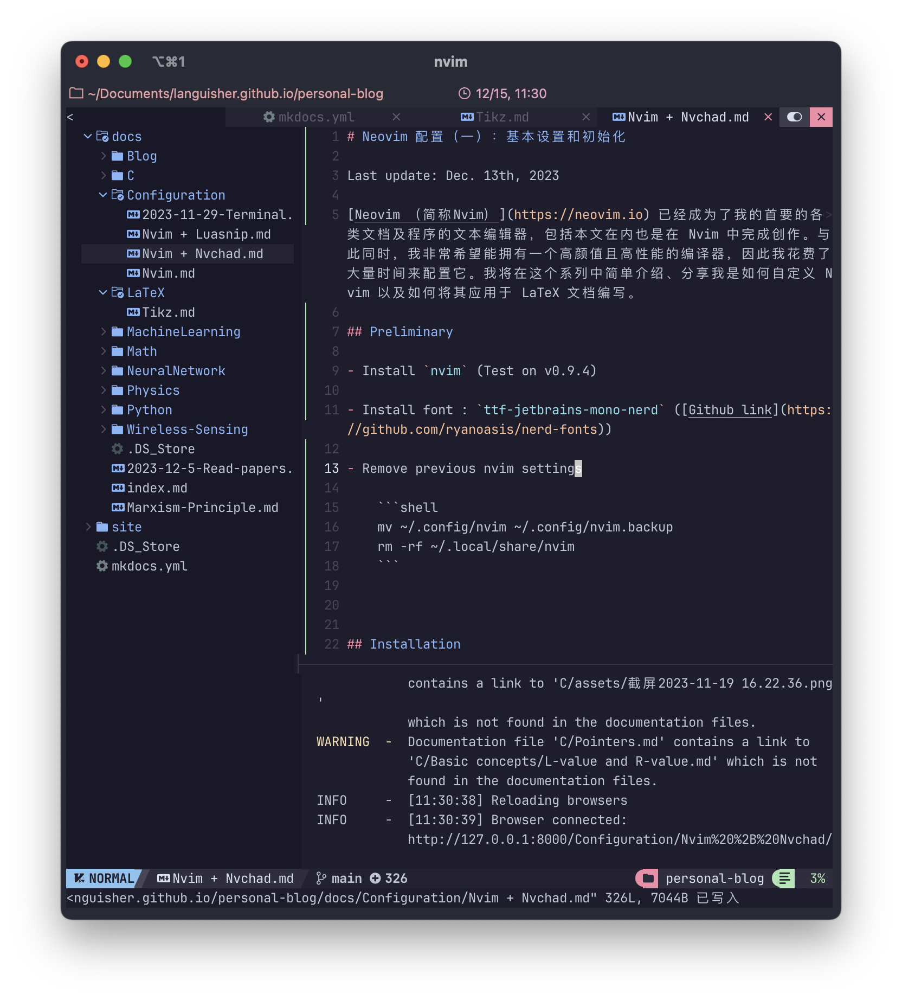

Neovim 配置（一）：基本设置和初始化
Last update: Dec. 19th, 2023
Neovim （简称Nvim） 已经成为了我的首要的各类文档及程序的文本编辑器，包括本文在内也是在 Nvim 中完成创作。与此同时，我非常希望能拥有一个高颜值且高性能的编译器，因此我花费了大量时间来配置它。我将在这个系列中简单介绍、分享我是如何自定义 Nvim 以及如何将其应用于 LaTeX 文档编写。

Preliminary
-
Install
nvim(Test on v0.9.4) -
Install font :
ttf-jetbrains-mono-nerd(Github link) -
Remove previous nvim settings
Installation
Download Nvchad settings
-
Clone from GitHub
-
In command line, type
nvim. When you see the prompt "Do you want to install example custom config? (y/N)" -- Type "N"
Configs
-
lua/custom/chadrc.lua -
lua/custom/plugins.lua(create the file if it does not exist)
Plugins
We are going to make changes to "-- Add custom plugins here" in file
lua/custom/plugins.lua.
Autosuggestions and code completion
CMP completion (Built-in)
I personally don't like using <Tab> to switch from one option to another, while <Tab> is latter on configured to switch from different spaces in LuaSnips. Therefore, I delete the following lines in the file lua/plugins/configs/cmp.lua:
-- local options = {
-- mappings = {
["<Tab>"] = cmp.mapping(function(fallback)
if cmp.visible() then
cmp.select_next_item()
elseif require("luasnip").expand_or_jumpable() then
vim.fn.feedkeys(vim.api.nvim_replace_termcodes("<Plug>luasnip-expand-or-jump", true, true, true), "")
else
fallback()
end
end, {
"i",
"s",
}),
["<S-Tab>"] = cmp.mapping(function(fallback)
if cmp.visible() then
cmp.select_prev_item()
elseif require("luasnip").jumpable(-1) then
vim.fn.feedkeys(vim.api.nvim_replace_termcodes("<Plug>luasnip-jump-prev", true, true, true), "")
else
fallback()
end
end, {
"i",
"s",
}),
-- },
-- }
LSP server and Mason: package manager for third-party dependencies
-
In
lua/custom/plugins.lua, add : -
Then
:!MasonInstallAll -
Create the configuration file
lua/custom/config/lspconfig.luaforlspconfiglocal base = require("plugins.configs.lspconfig") local on_attach = base.on_attach local capabilities = base.capabilities local lspconfig = require("lspconfig") lspconfig.clangd.setup { on_attach = function(client, bufnr) client.server_capabilities.signatureHelpProvider = false on_attach(client, bufnr) end, capabilities = capabilities, } -
:TSInstall cppto initiate.
Autoformatting
Null-ls
-
In
lua/custom/plugins.lua, Type in : -
Add the configuration file for
null-ls, create a file namedlua/custom/config/null-ls.lualocal augroup = vim.api.nvim_create_augroup("LspFormatting", {}) local null_ls = require("null-ls") local opts = { sources = { null_ls.builtins.formatting.clang_format, }, on_attach = function(client, bufnr) if client.supports_method("textDocument/formatting") then vim.api.nvim_clear_autocmds({ group = augroup, buffer = bufnr, }) vim.api.nvim_create_autocmd("BufWritePre", { group = augroup, buffer = bufnr, callback = function() vim.lsp.buf.format({ bufnr = bufnr }) end, }) end end, } return opts -
Change the auto-format style (if necessary):
Debugger
DAP: Debug Adapter protocol
-
In
lua/custom/plugins.lua, Type in :-- local plugins = { { "rcarriga/nvim-dap-ui", event = "VeryLazy", dependencies = "mfussenegger/nvim-dap", config = function() local dap = require("dap") local dapui = require("dapui") dapui.setup() dap.listeners.after.event_initialized["dapui_config"] = function() dapui.open() end dap.listeners.before.event_terminated["dapui_config"] = function() dapui.close() end dap.listeners.before.event_exited["dapui_config"] = function() dapui.close() end end }, { "jay-babu/mason-nvim-dap.nvim", event = "VeryLazy", dependencies = { "williamboman/mason.nvim", "mfussenegger/nvim-dap", }, opts = { handlers = {}, }, }, { "mfussenegger/nvim-dap", config = function(_, _) require("core.utils").load_mappings("dap") end }, -- } -
lua/custom/mappings.lua键位映射
Usage: (Example)
```shell
clang++ --debug main.cpp -o main
```
Then type <leader>db where you want to stop.
Type <leader>dr to execute, and to fill in main in the command prompt.
Usually the command begins with "Dap", so type in ":Dap
Tips
Lua programming related
Insert Vimscript in lua files
Add pluggins
-
Open file
custom/plugins.lua -
Type in contents : (
lervag/vimtexis a repository name in [GitHub])
File search
- Search for files :
Space + ff -
Search for files we have opened (file buffers) :
Space + fb -
File tree :
Ctrl + nto open -
mMark file -
aCreate file -
c(opy)-p(aste)-r(ename)
Window navigation
- Create windows :
:vsp, ::sp - Move between window :
Ctrl + hjkl - Pick window :
ABCD ...
Plugins related
Tabbufline
- Move between buffers :
Tab
Vim-Terminal
- Open a new terminal tab:
Space + h/v - Quit terminal tab: enter nterminal mode:
<ctrl>+x, then type:qto close the buffer.